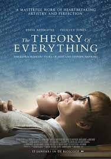

<h1>The Best Movies According to Uday</h1>
<h2>My top 3 movies of all-time.</h2>
<hr />
<ol>
          <li><h3><a href="https://www.imdb.com/title/tt3907584/?ref_=ext_shr_lnk">All the bright places</a></h3>
          
          <br>
              <ul>
                <li><b>Very inspiring movie</b> </li>
              </ul>
<li>
  <h3><a href="https://www.imdb.com/title/tt0816692/?ref_=ext_shr_lnk">Interstellar</a></h3>
    
</li>
          <ul>
           <br> <li><b>A very good sci-fi movie </b></li>
          </ul>
          
<li><h3><a href="https://www.imdb.com/title/tt2980516/?ref_=ext_shr_lnk">The theory of everything</a></h3></li>


            <ul>
                <br><li><b>Stephen Hawkings movies are always inspiring</b></li>
            </ul>